<!DOCTYPE html>
<html>
<head>
    

    

    


    <meta charset="utf-8">
    
    
    
    
    <title>算法设计 | 小灰灰灰灰的博客</title>
    <meta name="viewport" content="width=device-width, initial-scale=1, maximum-scale=1">
    
    <meta name="theme-color" content="#3F51B5">
    
    
    <meta name="keywords" content="计算机科学,课程笔记,坑">
    <meta name="description" content="该篇博客为肖鸣宇老师所开的 Design and Analysis of Algorithms 课程的笔记。 绪论算法解决的三种问题 Desicion Problem（判断是否） Optimal（最优化的结果&#x2F;解） Numeric Calculation（数字计算、解方程）  问题的分类（按复杂度） P: a solutuon can be solved in polynimoal time. N">
<meta property="og:type" content="article">
<meta property="og:title" content="算法设计">
<meta property="og:url" content="https://blog.lyh543.cn/computer-science/design-and-analysis-of-algorithms/index.html">
<meta property="og:site_name" content="小灰灰灰灰的博客">
<meta property="og:description" content="该篇博客为肖鸣宇老师所开的 Design and Analysis of Algorithms 课程的笔记。 绪论算法解决的三种问题 Desicion Problem（判断是否） Optimal（最优化的结果&#x2F;解） Numeric Calculation（数字计算、解方程）  问题的分类（按复杂度） P: a solutuon can be solved in polynimoal time. N">
<meta property="og:locale" content="zh_CN">
<meta property="og:image" content="https://blog.lyh543.cn/computer-science/design-and-analysis-of-algorithms/P_np_np-complete_np-hard.svg">
<meta property="og:image" content="https://blog.lyh543.cn/computer-science/design-and-analysis-of-algorithms/stable_roommate_match.png">
<meta property="og:image" content="https://blog.lyh543.cn/computer-science/design-and-analysis-of-algorithms/Karatsuba_Multiplication.jpg">
<meta property="og:image" content="https://blog.lyh543.cn/computer-science/design-and-analysis-of-algorithms/Matrix_Multiplication.jpg">
<meta property="og:image" content="https://blog.lyh543.cn/computer-science/design-and-analysis-of-algorithms/String_Similarity.jpg">
<meta property="og:image" content="https://blog.lyh543.cn/computer-science/design-and-analysis-of-algorithms/Independent_Set.jpg">
<meta property="og:image" content="https://blog.lyh543.cn/computer-science/design-and-analysis-of-algorithms/Vertex_Cover.jpg">
<meta property="og:image" content="https://blog.lyh543.cn/computer-science/design-and-analysis-of-algorithms/Vertex_Cover_and_Set_Cover.jpg">
<meta property="og:image" content="https://blog.lyh543.cn/computer-science/design-and-analysis-of-algorithms/3_SAT_to_Independent_Set.jpg">
<meta property="og:image" content="https://blog.lyh543.cn/computer-science/design-and-analysis-of-algorithms/P_np_np-complete_np-hard.svg">
<meta property="og:image" content="https://blog.lyh543.cn/computer-science/design-and-analysis-of-algorithms/Circuit_SAT.jpg">
<meta property="og:image" content="https://blog.lyh543.cn/computer-science/design-and-analysis-of-algorithms/Circuit_SAT_2.jpg">
<meta property="og:image" content="https://blog.lyh543.cn/computer-science/design-and-analysis-of-algorithms/NP-Complete-topology.jpg">
<meta property="article:published_time" content="2019-10-27T16:00:00.000Z">
<meta property="article:modified_time" content="2021-09-11T12:19:35.031Z">
<meta property="article:author" content="lyh543">
<meta property="article:tag" content="计算机科学">
<meta property="article:tag" content="课程笔记">
<meta property="article:tag" content="坑">
<meta name="twitter:card" content="summary">
<meta name="twitter:image" content="https://blog.lyh543.cn/computer-science/design-and-analysis-of-algorithms/P_np_np-complete_np-hard.svg">
    
        <link rel="alternate" type="application/atom+xml" title="小灰灰灰灰的博客" href="/atom.xml">
    
    <link rel="shortcut icon" href="/img/favicon.png">
    <link rel="stylesheet" href="/css/style.css?v=1.7.2">
    <script>window.lazyScripts=[]</script>

    <!-- custom head -->
    

<meta name="generator" content="Hexo 4.2.1"></head>

<body>
    <div id="loading" class="active"></div>

    <aside id="menu"  >
  <div class="inner flex-row-vertical">
    <a href="javascript:;" class="header-icon waves-effect waves-circle waves-light" id="menu-off">
        <i class="mdi mdi-close icon-lg"></i>
    </a>
    <div class="brand-wrap" style="background-image:url(/img/brand.jpg)">
      <div class="brand">
        <a href="/" class="avatar waves-effect waves-circle waves-light">
          
        </a>
        <hgroup class="introduce">
          <h5 class="nickname">lyh543</h5>
          <a href="mailto:lyh543@outlook.com" title="lyh543@outlook.com" class="mail">lyh543@outlook.com</a>
        </hgroup>
      </div>
    </div>
    <div class="scroll-wrap flex-col">
      <ul class="nav">
        
            <li class="waves-block waves-effect">
              <a href="/"  >
                <i class="icon icon-lg mdi mdi-home"></i>
                主页
              </a>
            </li>
        
            <li class="waves-block waves-effect">
              <a href="/archives"  >
                <i class="icon icon-lg mdi mdi-archive"></i>
                归档
              </a>
            </li>
        
            <li class="waves-block waves-effect">
              <a href="/tags"  >
                <i class="icon icon-lg mdi mdi-tag-multiple"></i>
                标签
              </a>
            </li>
        
            <li class="waves-block waves-effect">
              <a href="/categories"  >
                <i class="icon icon-lg mdi mdi-format-list-bulleted-square"></i>
                分类
              </a>
            </li>
        
            <li class="waves-block waves-effect">
              <a href="https://github.com/lyh543" target="_blank" >
                <i class="icon icon-lg mdi mdi-github"></i>
                Github
              </a>
            </li>
        
      </ul>
    </div>
  </div>
</aside>

    <main id="main">
        <header class="top-header" id="header">
    <div class="flex-row">
        <a href="javascript:;" class="header-icon waves-effect waves-circle waves-light on" id="menu-toggle">
          <i class="icon icon-lg mdi mdi-menu"></i>
        </a>
        <div class="flex-col header-title ellipsis">算法设计</div>
        
        <div class="search-wrap" id="search-wrap">
            <a href="javascript:;" class="header-icon waves-effect waves-circle waves-light" id="back">
                <i class="icon icon-lg mdi mdi-chevron-left"></i>
            </a>
            <input type="text" id="key" class="search-input" autocomplete="off" placeholder="输入感兴趣的关键字">
            <a href="javascript:;" class="header-icon waves-effect waves-circle waves-light" id="search">
                <i class="icon icon-lg mdi mdi-magnify"></i>
            </a>
        </div>
        
        
        <a href="javascript:;" class="header-icon waves-effect waves-circle waves-light" id="menuShare">
            <i class="icon icon-lg mdi mdi-share-variant"></i>
        </a>
        
    </div>
</header>
<header class="content-header post-header">

    <div class="container fade-scale">
        <h1 class="title">算法设计</h1>
        <h5 class="subtitle">
            
                <time datetime="2019-10-27T16:00:00.000Z" itemprop="datePublished" class="page-time">
  2019-10-28
</time>


	<ul class="article-category-list"><li class="article-category-list-item"><a class="article-category-list-link" href="/categories/%E8%AE%A1%E7%AE%97%E6%9C%BA%E7%A7%91%E5%AD%A6/">计算机科学</a></li></ul>

            
        </h5>
    </div>

    


</header>


<div class="container body-wrap">
    
    <aside class="post-widget">
        <nav class="post-toc-wrap post-toc-shrink" id="post-toc">
            <h4>TOC</h4>
            <ol class="post-toc"><li class="post-toc-item post-toc-level-2"><a class="post-toc-link" href="#绪论"><span class="post-toc-text">绪论</span></a><ol class="post-toc-child"><li class="post-toc-item post-toc-level-3"><a class="post-toc-link" href="#算法解决的三种问题"><span class="post-toc-text">算法解决的三种问题</span></a></li><li class="post-toc-item post-toc-level-3"><a class="post-toc-link" href="#问题的分类（按复杂度）"><span class="post-toc-text">问题的分类（按复杂度）</span></a><ol class="post-toc-child"><li class="post-toc-item post-toc-level-4"><a class="post-toc-link" href="#NPC-问题的求解"><span class="post-toc-text">NPC 问题的求解</span></a></li></ol></li><li class="post-toc-item post-toc-level-3"><a class="post-toc-link" href="#稳定婚姻问题-Stable-Match-Stable-marriage-problem"><span class="post-toc-text">稳定婚姻问题 Stable Match &#x2F; Stable marriage problem</span></a><ol class="post-toc-child"><li class="post-toc-item post-toc-level-4"><a class="post-toc-link" href="#稳定室友问题-可能无解"><span class="post-toc-text">稳定室友问题 可能无解</span></a></li><li class="post-toc-item post-toc-level-4"><a class="post-toc-link" href="#Gale-Shapley-算法"><span class="post-toc-text">Gale-Shapley 算法</span></a><ol class="post-toc-child"><li class="post-toc-item post-toc-level-5"><a class="post-toc-link" href="#正确性证明：终止"><span class="post-toc-text">正确性证明：终止</span></a></li><li class="post-toc-item post-toc-level-5"><a class="post-toc-link" href="#正确性证明：所有人都被匹配"><span class="post-toc-text">正确性证明：所有人都被匹配</span></a></li><li class="post-toc-item post-toc-level-5"><a class="post-toc-link" href="#正确性证明：稳定性"><span class="post-toc-text">正确性证明：稳定性</span></a></li><li class="post-toc-item post-toc-level-5"><a class="post-toc-link" href="#思考"><span class="post-toc-text">思考</span></a></li><li class="post-toc-item post-toc-level-5"><a class="post-toc-link" href="#多种稳定匹配情况——GS-男生最优，女生最劣"><span class="post-toc-text">多种稳定匹配情况——GS 男生最优，女生最劣</span></a></li></ol></li><li class="post-toc-item post-toc-level-4"><a class="post-toc-link" href="#问题拓展：将病人安排在医院"><span class="post-toc-text">问题拓展：将病人安排在医院</span></a></li></ol></li></ol></li><li class="post-toc-item post-toc-level-2"><a class="post-toc-link" href="#算法复杂度分析"><span class="post-toc-text">算法复杂度分析</span></a><ol class="post-toc-child"><li class="post-toc-item post-toc-level-3"><a class="post-toc-link" href="#贪心算法"><span class="post-toc-text">贪心算法</span></a></li><li class="post-toc-item post-toc-level-3"><a class="post-toc-link" href="#分治算法"><span class="post-toc-text">分治算法</span></a><ol class="post-toc-child"><li class="post-toc-item post-toc-level-4"><a class="post-toc-link" href="#递归表达式处理"><span class="post-toc-text">递归表达式处理</span></a><ol class="post-toc-child"><li class="post-toc-item post-toc-level-5"><a class="post-toc-link" href="#主方法"><span class="post-toc-text">主方法</span></a></li></ol></li><li class="post-toc-item post-toc-level-4"><a class="post-toc-link" href="#分治实例"><span class="post-toc-text">分治实例</span></a></li></ol></li><li class="post-toc-item post-toc-level-3"><a class="post-toc-link" href="#动态规划"><span class="post-toc-text">动态规划</span></a><ol class="post-toc-child"><li class="post-toc-item post-toc-level-4"><a class="post-toc-link" href="#0-1-背包问题"><span class="post-toc-text">0-1 背包问题</span></a></li><li class="post-toc-item post-toc-level-4"><a class="post-toc-link" href="#序列比对"><span class="post-toc-text">序列比对</span></a></li></ol></li></ol></li><li class="post-toc-item post-toc-level-2"><a class="post-toc-link" href="#网络流"><span class="post-toc-text">网络流</span></a></li><li class="post-toc-item post-toc-level-2"><a class="post-toc-link" href="#NP-和难以计算的问题"><span class="post-toc-text">NP 和难以计算的问题</span></a><ol class="post-toc-child"><li class="post-toc-item post-toc-level-3"><a class="post-toc-link" href="#多项式归约"><span class="post-toc-text">多项式归约</span></a><ol class="post-toc-child"><li class="post-toc-item post-toc-level-4"><a class="post-toc-link" href="#归约的技巧"><span class="post-toc-text">归约的技巧</span></a><ol class="post-toc-child"><li class="post-toc-item post-toc-level-5"><a class="post-toc-link" href="#简单恒等：独立集-与-顶点覆盖"><span class="post-toc-text">简单恒等：独立集 与 顶点覆盖</span></a></li><li class="post-toc-item post-toc-level-5"><a class="post-toc-link" href="#从一般到特殊：集合覆盖-与-顶点覆盖"><span class="post-toc-text">从一般到特殊：集合覆盖 与 顶点覆盖</span></a></li><li class="post-toc-item post-toc-level-5"><a class="post-toc-link" href="#构造的小技巧：3-SAT-与-独立集"><span class="post-toc-text">构造的小技巧：3-SAT 与 独立集</span></a></li><li class="post-toc-item post-toc-level-5"><a class="post-toc-link" href="#总结"><span class="post-toc-text">总结</span></a></li></ol></li><li class="post-toc-item post-toc-level-4"><a class="post-toc-link" href="#自身归约"><span class="post-toc-text">自身归约</span></a><ol class="post-toc-child"><li class="post-toc-item post-toc-level-5"><a class="post-toc-link" href="#例子：最小点覆盖"><span class="post-toc-text">例子：最小点覆盖</span></a></li></ol></li></ol></li><li class="post-toc-item post-toc-level-3"><a class="post-toc-link" href="#P-与-NP"><span class="post-toc-text">P 与 NP</span></a><ol class="post-toc-child"><li class="post-toc-item post-toc-level-4"><a class="post-toc-link" href="#决定性问题"><span class="post-toc-text">决定性问题</span></a></li><li class="post-toc-item post-toc-level-4"><a class="post-toc-link" href="#验证（Certification-amp-Certifier）算法"><span class="post-toc-text">验证（Certification &amp; Certifier）算法</span></a></li><li class="post-toc-item post-toc-level-4"><a class="post-toc-link" href="#NP-的严格定义"><span class="post-toc-text">NP 的严格定义</span></a></li></ol></li><li class="post-toc-item post-toc-level-3"><a class="post-toc-link" href="#NP-Complete"><span class="post-toc-text">NP-Complete</span></a><ol class="post-toc-child"><li class="post-toc-item post-toc-level-4"><a class="post-toc-link" href="#P、NP-和-EXP"><span class="post-toc-text">P、NP 和 EXP</span></a></li><li class="post-toc-item post-toc-level-4"><a class="post-toc-link" href="#第一个-NP-Complete-问题：Circuit-Satisfiablity"><span class="post-toc-text">第一个 NP-Complete 问题：Circuit Satisfiablity</span></a></li><li class="post-toc-item post-toc-level-4"><a class="post-toc-link" href="#更多的-NP-Complete-问题"><span class="post-toc-text">更多的 NP-Complete 问题</span></a></li><li class="post-toc-item post-toc-level-4"><a class="post-toc-link" href="#NP-问题归约例子"><span class="post-toc-text">NP 问题归约例子</span></a></li></ol></li></ol></li><li class="post-toc-item post-toc-level-2"><a class="post-toc-link" href="#近似算法"><span class="post-toc-text">近似算法</span></a></li></ol>
        </nav>
    </aside>


<article id="post-computer-science/design-and-analysis-of-algorithms"
  class="post-article article-type-post fade" itemprop="blogPost">

    <div class="post-card">
        <h1 class="post-card-title">算法设计</h1>
        <div class="post-meta">
            <time class="post-time" title="2019-10-28 00:00:00" datetime="2019-10-27T16:00:00.000Z"  itemprop="datePublished">2019-10-28</time>

            
	<ul class="article-category-list"><li class="article-category-list-item"><a class="article-category-list-link" href="/categories/%E8%AE%A1%E7%AE%97%E6%9C%BA%E7%A7%91%E5%AD%A6/">计算机科学</a></li></ul>


            

        </div>
        <div class="post-content" id="post-content" itemprop="postContent">
            <p>该篇博客为肖鸣宇老师所开的 <em>Design and Analysis of Algorithms</em> 课程的笔记。</p>
<h2 id="绪论"><a href="#绪论" class="headerlink" title="绪论"></a>绪论</h2><h3 id="算法解决的三种问题"><a href="#算法解决的三种问题" class="headerlink" title="算法解决的三种问题"></a>算法解决的三种问题</h3><ol>
<li>Desicion Problem（判断是否）</li>
<li>Optimal（最优化的结果/解）</li>
<li>Numeric Calculation（数字计算、解方程）</li>
</ol>
<h3 id="问题的分类（按复杂度）"><a href="#问题的分类（按复杂度）" class="headerlink" title="问题的分类（按复杂度）"></a>问题的分类（按复杂度）</h3><ul>
<li>P: a solutuon can be solved in polynimoal time.</li>
<li>NP: a solution can be checked in polynomial time.</li>
<li>NPC: problems that may not have a polynomial-time algorithm.</li>
</ul>
<figure class="image-bubble">
                <div class="img-lightbox">
                    <div class="overlay"></div>
                    
                </div>
                <div class="image-caption">P NP NP-Complete NP-Hard</div>
            </figure>

<ul>
<li>PTAS: Polynomial-time approximation scheme</li>
</ul>
<p>和上面不同的是，上面的词描述的都是问题，而 PTAS 是解决问题的方法。也就是说，可以说某个 NP-Hard 问题有 PTAS 算法。</p>
<p>PTAS 要求对于给定的任意近似率 1+ε，都能给出一个多项式算法，虽然这个多项式在 ε 趋于 0 时会变为指数级或更高。一般来说 PTAS 算法的复杂度都可以写为 $O(n^{(1/ε)})$ 或 $O(n^{exp(1/ε)})$。如 TSP 问题和背包问题都存在 PTAS 算法。</p>
<h4 id="NPC-问题的求解"><a href="#NPC-问题的求解" class="headerlink" title="NPC 问题的求解"></a>NPC 问题的求解</h4><ol>
<li>启发式算法（Heuristic algorithm）：我觉得怎么好，就怎么做。不知道对不对，但是跑的确实快。例如：人工智能方面。</li>
<li>近似算法（Approximation Algorithm）：在多项式时间内得到一个近似解。（难点在于证明近似）</li>
<li>快速算法：高效的指数运行时间的精确算法。</li>
<li>参数算法：参数小的时候，能高效解决问题。近年来兴起。</li>
</ol>
<h3 id="稳定婚姻问题-Stable-Match-Stable-marriage-problem"><a href="#稳定婚姻问题-Stable-Match-Stable-marriage-problem" class="headerlink" title="稳定婚姻问题 Stable Match / Stable marriage problem"></a>稳定婚姻问题 Stable Match / Stable marriage problem</h3><p>给定 n 男 n 女，以及每个人对异性对象的喜好程度（按 1 至 n 排列）。安排男女结婚，使得不出现以下不稳定情形：</p>
<blockquote>
<p>在 n 男 n 女中的存在两对夫妇 (M, W) 和 (m, w)，M 男对 w 女喜好度大于现任妻子 W 女，并且 w 女对 M 男喜好度也大于现任丈夫 m 男。</p>
</blockquote>
<p>找到解、证明其符合题意、证明是否存在最优解都不是很显然。</p>
<h4 id="稳定室友问题-可能无解"><a href="#稳定室友问题-可能无解" class="headerlink" title="稳定室友问题 可能无解"></a>稳定室友问题 可能无解</h4><p>若给 2n 个人，可以随意选择其他 2n-1 人。可能无解。如下图：</p>
<figure class="image-bubble">
                <div class="img-lightbox">
                    <div class="overlay"></div>
                    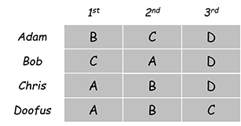
                </div>
                <div class="image-caption">stable roommate match</div>
            </figure>

<h4 id="Gale-Shapley-算法"><a href="#Gale-Shapley-算法" class="headerlink" title="Gale-Shapley 算法"></a>Gale-Shapley 算法</h4><p>Gale-Shapley 算法，1962</p>
<figure class="highlight applescript"><table><tr><td class="gutter"><pre><span class="line">1</span><br><span class="line">2</span><br><span class="line">3</span><br><span class="line">4</span><br><span class="line">5</span><br><span class="line">6</span><br><span class="line">7</span><br><span class="line">8</span><br><span class="line">9</span><br><span class="line">10</span><br><span class="line">11</span><br><span class="line">12</span><br></pre></td><td class="code"><pre><span class="line">Initialize each person <span class="keyword">to</span> be free.</span><br><span class="line"><span class="keyword">while</span> (<span class="keyword">some</span> man <span class="keyword">is</span> free <span class="keyword">and</span> hasn't proposed <span class="keyword">to</span> <span class="keyword">every</span> woman)</span><br><span class="line">&#123;</span><br><span class="line">    Choose such a man m</span><br><span class="line">    w = <span class="number">1</span>st woman <span class="keyword">on</span> m's <span class="built_in">list</span> <span class="keyword">to</span> whom m has <span class="keyword">not</span> yet proposed</span><br><span class="line">    <span class="keyword">if</span> (w <span class="keyword">is</span> free)</span><br><span class="line">        assign m <span class="keyword">and</span> w <span class="keyword">to</span> be engaged</span><br><span class="line">    <span class="keyword">else</span> <span class="keyword">if</span> (w prefers m <span class="keyword">to</span> her fiancé m')</span><br><span class="line">        assign m <span class="keyword">and</span> w <span class="keyword">to</span> be engaged, <span class="keyword">and</span> m' <span class="keyword">to</span> be free</span><br><span class="line">    <span class="keyword">else</span></span><br><span class="line">        w rejects m</span><br><span class="line">&#125;</span><br></pre></td></tr></table></figure>

<p><a href="stable_marriage_match_demo.ppsx">Demo</a></p>
<h5 id="正确性证明：终止"><a href="#正确性证明：终止" class="headerlink" title="正确性证明：终止"></a>正确性证明：终止</h5><p>注意到：</p>
<p>(1) 男生从高到低求婚，且对同一个女生只会求一次婚；<br>(2) 女生一脱单，不会重返单身；</p>
<p>因此，由 (1)，最多进行 $n^2$ 次匹配后，程序会终止。</p>
<h5 id="正确性证明：所有人都被匹配"><a href="#正确性证明：所有人都被匹配" class="headerlink" title="正确性证明：所有人都被匹配"></a>正确性证明：所有人都被匹配</h5><p><strong>数学三大证明方法：反证、归纳、构造。</strong></p>
<p><strong>反证（By Contradiction）</strong>：不妨设（<strong>Suppose, for sake of contradiction, that</strong>）结束时 Zeus 没有被匹配，由 (1)，他向所有女生求过婚。</p>
<ul>
<li>则一定有女生没有被匹配，不妨设为 Amy；</li>
<li>由 (2)，Amy 从来没有被求过婚；</li>
<li>则 Amy 没有被 Zeus 求过婚；</li>
<li>由假设和上一条，推出矛盾。</li>
</ul>
<h5 id="正确性证明：稳定性"><a href="#正确性证明：稳定性" class="headerlink" title="正确性证明：稳定性"></a>正确性证明：稳定性</h5><p>反证：假设 A-Z 是不稳定对。则分情况讨论：</p>
<ul>
<li>情况 1：Z 没有向 A 求过婚。则 Z 更喜欢当前的对象，与假设矛盾；</li>
<li>证明 2：Z 向 A 求过婚，而 A-Z 没有在一起，则 A 更喜欢当前的对象，与假设矛盾；</li>
</ul>
<p>综上，假设不成立。</p>
<h5 id="思考"><a href="#思考" class="headerlink" title="思考"></a>思考</h5><ol>
<li>如何用算法实现？时间复杂度？（用数组即可，时间复杂度 $O(n^2)$）</li>
<li>如果有多种稳定匹配，GS 算法得到的是哪一种？</li>
</ol>
<h5 id="多种稳定匹配情况——GS-男生最优，女生最劣"><a href="#多种稳定匹配情况——GS-男生最优，女生最劣" class="headerlink" title="多种稳定匹配情况——GS 男生最优，女生最劣"></a>多种稳定匹配情况——GS 男生最优，女生最劣</h5><p>定义：如果存在一组稳定匹配，其中男生 m 为女生 w 配对，则定义他们为彼此的合法伴侣。<br>结论：GS 算法得到的是男生的最优解，女生的最劣解（男生匹配到的伴侣是最优的合法伴侣，女生匹配到的伴侣是最劣的合法伴侣）。</p>
<p>证明 GS 算法得到的匹配 S* 是男生最优的（男生匹配到的伴侣是最优的合法伴侣）：（反证）</p>
<ul>
<li>假设某男在 S* 中匹配到了不是最佳合法伴侣的伴侣。由于男生是以降序求婚，有男生被其最佳合法伴侣拒绝过。设第一个被最佳合法伴侣拒绝的男生为 Y，其最佳合法伴侣为 A。</li>
<li>设在另一个稳定匹配 S 中，女生 A 和男生 Y 在一起。</li>
<li>在 S* 中，女生 A 拒绝过男生 Y，则女生 A 一定和某男生（设为 Z）在一起了（女生拒绝男生的充要条件是女生和她更喜欢的男生在一起）。则可得女生 A 对男生的好感度中，Z &gt; Y (3)。</li>
<li>设在 S 中，男生 Z 和某女生 B 在一起。</li>
<li>由于在 S* 中，男生 Y 是第一个被拒绝的，所以此时男生 Z 还没有被拒绝过。此时男生 Z 和女生 A 在一起了，所以男生 Z 还没有向女生 B 求过婚（否则 Z 需要先被 B 拒绝，才能和 A 在一起）。则男生 Z 的好感度中，A &gt; B (4)。</li>
<li>在稳定匹配 S 中，A-Y 在一起，B-Z 在一起。而由 (3)(4)，A-Z 对彼此的好感度高于他们的当前伴侣 B(Y)，因此，推出匹配 S 是不稳定的，矛盾。</li>
</ul>
<p>问题得证。</p>
<p>有意思的是，男生的最优是以女生的最劣为代价（在 GS 算法中，女生匹配到的伴侣是最劣的合法伴侣），这可以由男生最优这一结论简单的推出：</p>
<ul>
<li>假设在稳定匹配 S* 中，女生 A 和 男生 Z 在一起。而女生 A 的最劣合法伴侣是某男生 Y。则女生 A 对男生的好感度中，Z &gt; Y (5)。</li>
<li>设在稳定匹配 S 中，女生 A 和某男生 Y 在一起，男生 Z 和 女生 B 在一起。</li>
<li>S* 中 A-Z 在一起。由 S* 中男生最优的结论，男生 Z 对女生的好感中，A &gt; B (6)。</li>
<li>在稳定匹配 S 中，A-Y 在一起，B-Z 在一起。而由 (5)(6)，A-Z 对彼此的好感度高于他们的当前伴侣 B(Y)，因此，推出匹配 S 是不稳定的，矛盾。</li>
</ul>
<p>问题得证。</p>
<h4 id="问题拓展：将病人安排在医院"><a href="#问题拓展：将病人安排在医院" class="headerlink" title="问题拓展：将病人安排在医院"></a>问题拓展：将病人安排在医院</h4><p>没有做过多研究，仅作摘抄。</p>
<p>Men ≈ hospitals, Women ≈ med school residents</p>
<p>Variant 1. Some participants declare others as unacceptable. (resident A unwilling towork in Cleveland)<br>Variant 2. Unequal number of men and women.<br>Variant 3. Limited polygamy. (hospital X wants to hire 3 residents)</p>
<p>Def. Matching S unstable if there is a hospital h and resident r such that:</p>
<ul>
<li>h and r are acceptable to each other; and</li>
<li>either r is unmatched, or r prefers h to her assigned hospital; and</li>
<li>either h does not have all its places filled, or h prefers r to at least one of its assigned residents.</li>
</ul>
<h2 id="算法复杂度分析"><a href="#算法复杂度分析" class="headerlink" title="算法复杂度分析"></a>算法复杂度分析</h2><p>渐进复杂度分析。</p>
<blockquote>
<p>渐近分析（asymptotic analysis、asymptotics），在数学分析中是一种描述<strong>函数在极限</strong>附近的行为的方法。 有多个科学领域应用此方法。 例子如下： 在计算机科学中，算法分析考虑给定算法在输入非常大的数据集时候的性能。——维基百科</p>
</blockquote>
<p>$O(g(n)), \Omega(g(n)), \Theta(g(n))$ 这些都是函数的集合。为什么用 “$=$”而不用 “$\in$”，只能说是习惯。</p>
<p>主要是想说说另外两个非紧上界、下界。</p>
<p>$O(g(n)) = \{ f(n) |$<br>对于任何正常数 $c&gt;0$，存在正数 $n_0&gt;0$ 使得对所有 $n \geq n_0$ 有：$0 \leq f(n) &lt; cg(n) \}$  </p>
<p>$ \Omega (g(n)) = \{ f(n) |$<br>对于任何正常数 $c&gt;0$，存在正数 $n_0&gt;0$ 使得对所有 $n \geq n_0$ 有：$0 \leq cg(n) &lt; f(n) \}$</p>
<p>和上面的区别就是这是对于任何 $c$ 都满足，因此必须要在数量级上<strong>非紧</strong>，才能使得对于任何 $c$ 都满足。</p>
<p>这还很像极限的定义：</p>
<p>$$ f(n) = O(g(n)) \space \Leftarrow \space \lim_{n \to \infty} \frac{f(n)}{g(n)} = 0 \space \Rightarrow \space g(n) = \Omega (f(n))$$</p>
<p>但是不完全一样。如果拿极限定义，$f(n)$ 就不满足 $O(f(n))$ 了。</p>
<p>传递性、对称性、反身性、互对称性、算术运算。</p>
<h3 id="贪心算法"><a href="#贪心算法" class="headerlink" title="贪心算法"></a>贪心算法</h3><p>实例：线段覆盖。</p>
<p>证明贪心的正确性的几种方法：</p>
<ol>
<li>试图说明在每一步以后，贪心算法至少和别的算法一样好。</li>
<li>如果每一个解都有值，找到一个界，并证明贪心能够达到这个界。</li>
<li>交换论证。证明每一个解通过一步步的交换，在不变差的前提下，逐渐变为贪心的解。</li>
</ol>
<h3 id="分治算法"><a href="#分治算法" class="headerlink" title="分治算法"></a>分治算法</h3><p>分治复杂度计算：  </p>
<blockquote>
<p>若 $T(n) = k \cdot O(\frac{n}{2}) + \Theta(n)$，且  则 $T(n) = O(n^{\log_2 k})\cdot T(1) + O(n\log n)$。（构造等比数列或列出递归树证明）</p>
</blockquote>
<p>还有更通用的（但是好复杂）：</p>
<blockquote>
<p>若 $T(n) = \begin{cases}1 &amp; \text{n=1} \ kT(\frac{n}{m})+f(n) &amp; \text{n&gt;1} \end{cases}$，</p>
<p>则 $T(n)=n^{log_mk}+\sum_{j=0}^{log_mn-1}k^j f(\frac{n}{m^j})$</p>
</blockquote>
<p>不如使用主方法。</p>
<p>注意分治递推表达式里面的常数 $k$ 推出来和 $n$ 的次数是有关系的。</p>
<h4 id="递归表达式处理"><a href="#递归表达式处理" class="headerlink" title="递归表达式处理"></a>递归表达式处理</h4><p>可参考《算法导论》或其他书籍的递归理论。</p>
<ul>
<li>Substitution method（代换法，猜结论，然后用第二数学归纳法证明）</li>
<li>Recursion-tree method（递归树法）</li>
<li>Master method（主方法<del>即套公式法</del>）</li>
</ul>
<h5 id="主方法"><a href="#主方法" class="headerlink" title="主方法"></a>主方法</h5><p>主方法看起来复杂，其实也不复杂。</p>
<p>对于表达式 $T(n)=aT(\frac{n}{b})+f(n)$，  其中 $a≥1$ 和 $b&gt;1$ 是常数，$T(1)=\Theta(1)$，$f(n)$ 是一个渐进正的函数（渐进函数，并且是增函数），其中 $\frac{n}{b}$ 指 $\lfloor \frac{n}{b} \rfloor$ 或 $\lceil \frac{n}{b} \rceil$：</p>
<ul>
<li>若对于某常数 $\varepsilon&gt;0$，有 $f((n)=O(n^{\log_b{a-\varepsilon}})$，则 $T(n)=\Theta(n^{\log_b a})$</li>
<li>若 $f(n)= \Theta(n^{\log_ba})$，则 $T(n)=\Theta(n^{\log_ba}\log n)$</li>
<li>若对于某常数 $\varepsilon&gt;0$，有 $f(n)=\Omega(n^{\log_b{a+\varepsilon}})$，且对常数 $c&lt;1$ 与所有足够大的 $n$，有 $a\cdot f(\frac{n}{b}) \leq c \cdot f(n)$，则 $T(n)=\Theta(f(n))$</li>
</ul>
<p>主方法其实是在说这个事情：  </p>
<p>对于 $T(n)=aT(\frac{n}{b})+f(n)$，其最终算出来的复杂度为某两项之和，并且前一项化出来肯定是 $\Theta(n^{\log_b a})$。</p>
<p>主方法做的事情，就是为了在某些条件下，就可以直接判断哪一项的复杂度更高（然后忽略掉另一项）。</p>
<p>而第一、三条的奇奇怪怪的形式是为了表示一句话：“如果后一项的复杂度低于/高于 $\Theta(n^{\log_b a})$”。<br>在渐进复杂度中没有“复杂度低于”的这种表示法，只能引入 $\varepsilon&gt;0$ 来表示复杂度的高于、低于。于是看起来才这么复杂，<strong>为了严谨性不得不牺牲可读性</strong>。</p>
<p>剩下具体的内容就不再展开了，因为涉及到了主方法的证明了。</p>
<h4 id="分治实例"><a href="#分治实例" class="headerlink" title="分治实例"></a>分治实例</h4><p>用分治加速大数乘法：将大数分为前半段和后半段计算。注意要尽量在代数上减少乘法的次数，不能直接跑。</p>
<figure class="image-bubble">
                <div class="img-lightbox">
                    <div class="overlay"></div>
                    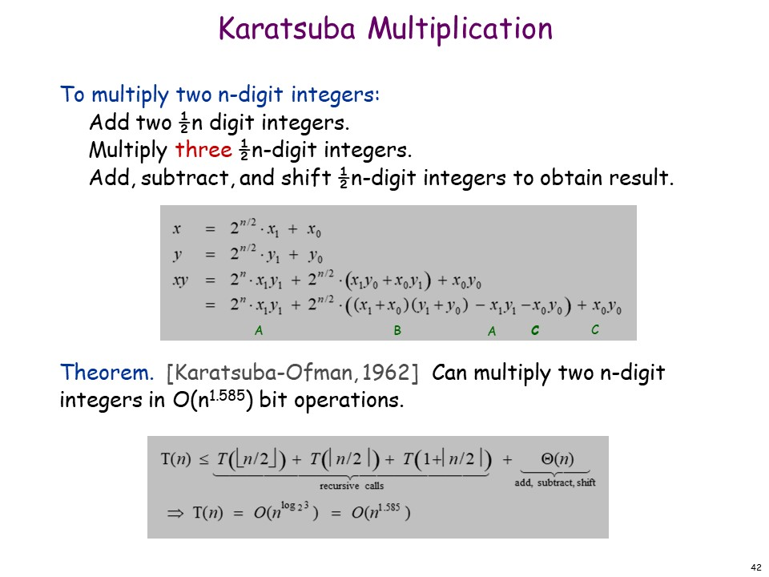
                </div>
                <div class="image-caption">Karatsuba Multiplication</div>
            </figure>

<p>用分治加速矩阵乘法：对矩阵分块，再经过一波玄学操作，能把 8 次乘法（$O(n^{log_2 k}) = O(n^3)$）减少到 7 次，从而把复杂度降到 $O(n^{log_2 7}) = O(n^{2.81})$。</p>
<figure class="image-bubble">
                <div class="img-lightbox">
                    <div class="overlay"></div>
                    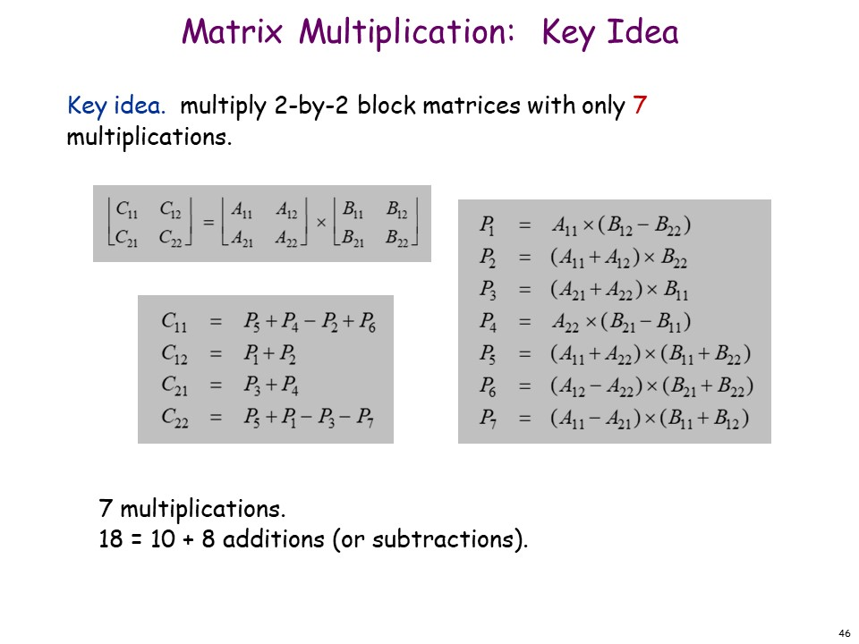
                </div>
                <div class="image-caption">Matrix Multiplication</div>
            </figure>

<h3 id="动态规划"><a href="#动态规划" class="headerlink" title="动态规划"></a>动态规划</h3><p>DP 是为了解决递归算法中的重复计算。 </p>
<p>DP 可以写为递归形式，也可以写为自底向上的循环形式。</p>
<h4 id="0-1-背包问题"><a href="#0-1-背包问题" class="headerlink" title="0-1 背包问题"></a>0-1 背包问题</h4><p>时间复杂度：$\Theta(nW)$，<br>不是对于输入量的多项式复杂度，而是输入数值的多项式复杂度（输入量是输入数值取 $log$）。可称为伪多项式时间复杂度，Pseudo-polynomial）。<br>是 NP 问题。</p>
<p>0-1 背包有多项式复杂度的近似算法，解的误差在 0.01% 以内。</p>
<h4 id="序列比对"><a href="#序列比对" class="headerlink" title="序列比对"></a>序列比对</h4><p>把两个长度为 m 和 n 的字符串通过 <code>mismatch</code> 和 <code>gap</code> 使得两个字符串匹配。每个  <code>mismatch</code> 和 <code>gap</code> 的代价已知。求总代价的最小值。</p>
<figure class="image-bubble">
                <div class="img-lightbox">
                    <div class="overlay"></div>
                    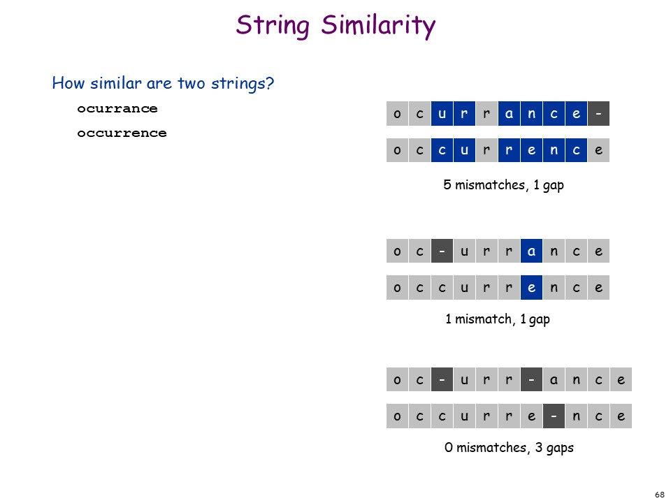
                </div>
                <div class="image-caption">String Similarity</div>
            </figure>

<p>跑一个 $T(n,m) = S(n,m) = \Theta(mn)$ 的 DP 即可。</p>
<p>这是目前最快的算法，但是对于计算生物学来说，两个 10GB 的字符串会很难受。</p>
<h2 id="网络流"><a href="#网络流" class="headerlink" title="网络流"></a>网络流</h2><p>见<a href="/cpp/ACM/network-flow">另一篇博客</a>。</p>
<h2 id="NP-和难以计算的问题"><a href="#NP-和难以计算的问题" class="headerlink" title="NP 和难以计算的问题"></a>NP 和难以计算的问题</h2><p>讲 NP 之前，我们得先来聊聊什么是归约。</p>
<p>归约，是把看起来不相关的两个问题的解决方法联系起来。这样，就能用一个已知为（公认为） NP 的问题，证明一堆问题是 NP 的。</p>
<h3 id="多项式归约"><a href="#多项式归约" class="headerlink" title="多项式归约"></a>多项式归约</h3><p>问题 $X$ 被多项式归约（polynomial reduces to）问题 $Y$，定义为，对于问题 $X$ 的任意一种情形，都能通过进行以下操作完成：  </p>
<ol>
<li>多项式次标准操作 和，</li>
<li>多项式次解决问题 $Y$ 的方法。  </li>
</ol>
<p>记作：$X \leq _p Y$。</p>
<p>这么做的目的，是将问题按（在多项式时间内解决的）难度分类。以下是分类的技巧：</p>
<ol>
<li>如果 $X \leq _p Y$，而 $Y$ 能在多项式时间内解决，则 $X$ 也能在多项式时间内解决。  </li>
<li>（1 的逆否命题）如果 $X \leq _p Y$，而 $X$ 不能在多项式时间内解决，则 $Y$ 也不能在多项式时间内解决。  </li>
<li> $(X \leq _p Y) \wedge (Y \leq _p X) \Leftrightarrow X \equiv _p Y $。</li>
</ol>
<h4 id="归约的技巧"><a href="#归约的技巧" class="headerlink" title="归约的技巧"></a>归约的技巧</h4><ol>
<li>Reduction by <strong>simple equivalence</strong>.(简单恒等)</li>
<li>Reduction from <strong>special</strong> case to <strong>general</strong> case.(<strong>从特殊到一般</strong>)</li>
<li>Reduction by encoding with gadgets.(利用一些<strong>小技巧</strong>进行归约)</li>
</ol>
<h5 id="简单恒等：独立集-与-顶点覆盖"><a href="#简单恒等：独立集-与-顶点覆盖" class="headerlink" title="简单恒等：独立集 与 顶点覆盖"></a>简单恒等：独立集 与 顶点覆盖</h5><p>独立集：给定一个图，在图中找到一个点的集合，使得集合中任意两点之间都没有线段。<br>下图的最大独立集大小为 6。</p>
<figure class="image-bubble">
                <div class="img-lightbox">
                    <div class="overlay"></div>
                    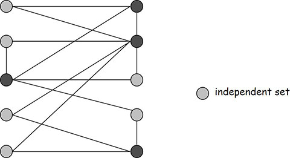
                </div>
                <div class="image-caption">最大独立集</div>
            </figure>

<p>点覆盖：给定一个图，在图中找到一个点的集合，使得图中的所有边的两个顶点至少有一个在集合里。<br>下图的最小点覆盖是 4。</p>
<figure class="image-bubble">
                <div class="img-lightbox">
                    <div class="overlay"></div>
                    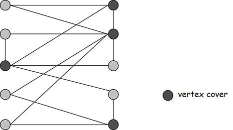
                </div>
                <div class="image-caption">最小点覆盖</div>
            </figure>

<p>看两个描述就觉得有互补的关系，而看这两张图，就更明显了。最大独立集问题和最小点覆盖问题是否是互补的呢？</p>
<p>是的！最大独立集问题 $\equiv _p$ 最小点覆盖问题。</p>
<p>证明：</p>
<blockquote>
<p>只需要证明 $S$ 是独立集的充要条件是 $V-S$ 是点覆盖。  </p>
<p>必要：设 $S$ 为独立集。$\forall \ edge \ (u, v), u \notin S \     or \ v \notin S \Rightarrow u \in V - S \ or \ v \in V - S \Rightarrow V - S$ 是点覆盖；</p>
<p>充分：设 $G-S$ 为点覆盖。对于 $S$ 中的任意两点 $v, u$，二点之间必没有边，否则至少有一点必须被加入点覆盖 $G-S$。所以 $S$ 是独立集。</p>
</blockquote>
<h5 id="从一般到特殊：集合覆盖-与-顶点覆盖"><a href="#从一般到特殊：集合覆盖-与-顶点覆盖" class="headerlink" title="从一般到特殊：集合覆盖 与 顶点覆盖"></a>从一般到特殊：集合覆盖 与 顶点覆盖</h5><p>集合覆盖：给定全集 $U$、它的一些子集 $S_1, S_2, …, S_m \subseteq U$ 和一个整数 $k$，问能否从所有子集 $S_i$中选取不多于 $k$ 个，使得它们的并集为 $U$。</p>
<p>可以证明，顶点覆盖问题 $\leq _p$ 集合覆盖问题。证明思路是，顶点覆盖问题和一类特殊的集合覆盖问题是可以互相等价的。</p>
<ul>
<li>让顶点覆盖中的点是集合覆盖中的集合。</li>
<li>让顶点覆盖中的线段是集合覆盖中的元素。</li>
<li>让上述线段的两端的顶点是包含了对应元素所存在的集合。（特殊就出现在了这里，要求集合覆盖中的每个元素最多只能出现在两个集合 $S_i$ 中）</li>
</ul>
<p>这样，我们构造出的特殊的最小集合覆盖即等价于最小顶点覆盖。如下图：</p>
<figure class="image-bubble">
                <div class="img-lightbox">
                    <div class="overlay"></div>
                    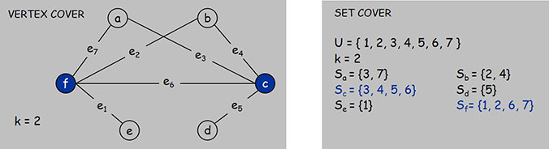
                </div>
                <div class="image-caption">集合覆盖和顶点覆盖</div>
            </figure>

<p>因此，顶点覆盖 $\leq _p$ 集合覆盖。</p>
<h5 id="构造的小技巧：3-SAT-与-独立集"><a href="#构造的小技巧：3-SAT-与-独立集" class="headerlink" title="构造的小技巧：3-SAT 与 独立集"></a>构造的小技巧：3-SAT 与 独立集</h5><p>先介绍一下析取范式。</p>
<p>简单合取式（Clause）：$C_j = {x_1} \vee \overline   \vee {x_3}$；<br>析取范式（CNF）：$\Phi = C_1 \wedge C_2 \wedge C_3 \wedge C_4$。</p>
<p>SAT 问题（Satisfiability）是给定一个析取范式（CNF），判定是否存在一种赋值，使得该范式值为真。</p>
<p>3-SAT 即是，每个 Clause 的变量数不超过 3（不是整个 CNF 涉及到的变量数不超过 3）。如上述的 CNF。</p>
<p>我们可以<strong>归约：3-SAT $\leq _p$ 独立集</strong></p>
<p>构造：（假设问题的 CNF 有 $k$ 个 Clause）  </p>
<ul>
<li>对于每个 Clause 的三个变量，构造三个点，并连接起来构成 $k$ 个三角形；</li>
<li>将所有变量和它的所有否定形式一一连接。</li>
</ul>
<p>此时，3-SAT 有解，当且仅当该图的最大独立集大小为 $k$。</p>
<figure class="image-bubble">
                <div class="img-lightbox">
                    <div class="overlay"></div>
                    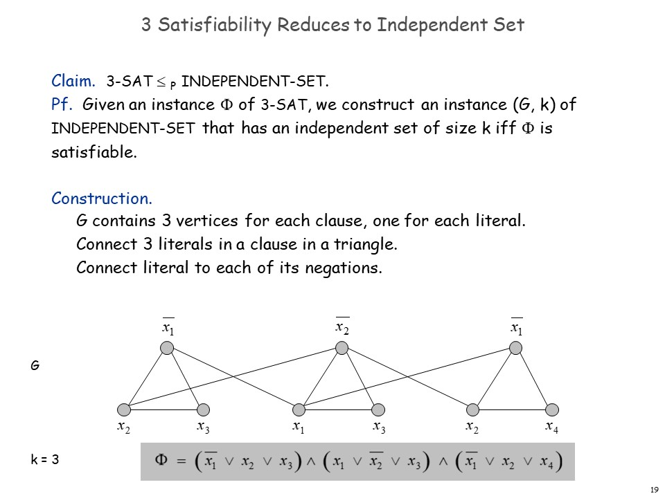
                </div>
                <div class="image-caption">3_SAT_to_Independent_Set</div>
            </figure>

<blockquote>
<p>证明：显然 $k$ 是图的独立集大小的上界。若该图的最大独立集大小为 $k$，则每个三角形必有一个顶点在该独立集中，且这些点不会同时出现 $x$ 和 $\overline{x}$ 的情况（否则这两点会被相连，与独立集定义矛盾），则可使取的点（$x$ 或 $\overline{y}$）的值为真，没有被赋值的变量任取真或假，即是 3-SAT 的解。</p>
<p>若 3-SAT 有解，则独立集可取解中所有值为真的点，以及值为假的点的取反（即若 $x$ 为假，取所有 $\overline{x}$），对于同一三角形中的点，可在取到的集合去掉任一，即可得到一个大小为 k 的独立集。</p>
</blockquote>
<h5 id="总结"><a href="#总结" class="headerlink" title="总结"></a>总结</h5><p>我们已经证明了：</p>
<p>3-SAT $\leq _p$ 独立集 $\equiv _p$ 顶点覆盖 $\leq _p$ 集合覆盖</p>
<h4 id="自身归约"><a href="#自身归约" class="headerlink" title="自身归约"></a>自身归约</h4><p>每个问题两个研究方向：决定问题（Decision Problem）和优化问题（Search Problem）。</p>
<p>举个栗子，对于顶点覆盖问题：<br>决定问题是，是否存在一个小于等于 $k$ 的顶点覆盖。<br>优化问题是，找到最小的点覆盖的集合的大小。</p>
<p>显然，对于所有问题，决定问题能被归约到优化问题。<br>有趣的地方就在于，貌似优化问题也可以归约（指多项式归约）到决定问题，这样，决定问题和归约问题就互相归约了。这种归约叫做自身归约。</p>
<p>如果对于一个问题，如果它能自身归约，于是对于这种问题，我们要想证明 NP，只需要证明决定问题是 NP 的，这样就简化了问题。</p>
<p>而对于目前的所有问题，都可以证明有自身归约的性质（但不代表所有问题一定都有自身归约的性质）。</p>
<h5 id="例子：最小点覆盖"><a href="#例子：最小点覆盖" class="headerlink" title="例子：最小点覆盖"></a>例子：最小点覆盖</h5><p>下面证明最小点覆盖的优化问题可以归约到决定问题。</p>
<ol>
<li>二分搜索找到最小点覆盖的大小，并设为 k；</li>
<li>在图中找到一个点 v 使得删掉 v （及其邻边）的图的有大小为 k-1 的点覆盖；</li>
<li>在图中删去点 v，并返回 2 继续执行。</li>
</ol>
<p>不同的问题证明自身归约有不同的方法，但其实也是有套路可循的。</p>
<h3 id="P-与-NP"><a href="#P-与-NP" class="headerlink" title="P 与 NP"></a>P 与 NP</h3><h4 id="决定性问题"><a href="#决定性问题" class="headerlink" title="决定性问题"></a>决定性问题</h4><p>决定性问题的严格定义：</p>
<blockquote>
<p>$X$ 是一个字符串（当然也可以是数字）的集合，$s$ 是一个字符串，决定问题是需要判断 $s$ 是否在 $X$ 中。</p>
</blockquote>
<p>多项式时间复杂度：</p>
<blockquote>
<p>指对于每个字符串 $s$，判断 $s$ 是否在 $X$ 中的算法所需时间是 $s$ 长度 $|s|$ 的多项式次数。</p>
</blockquote>
<p>如判断数字 t 是不是质数的朴素算法，就不是多项式时间复杂度的（是 $10^{|t|}$ 的）。在 2002 年出现了多项式复杂度的 AKS 算法，$p(|s|)=|s|^8$。<br>它的 $X$ 集合是 $\{2,3,5,…\}$。</p>
<h4 id="验证（Certification-amp-Certifier）算法"><a href="#验证（Certification-amp-Certifier）算法" class="headerlink" title="验证（Certification &amp; Certifier）算法"></a>验证（Certification &amp; Certifier）算法</h4><p>验证算法同样是要判断 $s$ 是否在 $X$ 内。不同的是，它可以用到更多的信息 $t$，以加速判断。<br>如，判断合数的验证算法需要的 $t$ 是它的一个因数，这样就能很快判断了。</p>
<p>验证算法的严格定义：对于算法 $C(s,t)$，如果对于 $X$ 中的任意一个解 $s$，都存在一个 $t$，使得 $C(s,t) = yes$，则称 $C(s,t)$ 算法是问题 $X$ 的一个验证算法。</p>
<h4 id="NP-的严格定义"><a href="#NP-的严格定义" class="headerlink" title="NP 的严格定义"></a>NP 的严格定义</h4><p>先声明一下，NP 不是 P 的反义词！！！！这是新人（包括我）在第一次接触 P 和 NP 时，容易产生的一个很大的误区。</p>
<p>扯完验证算法，就可以说 NP 了，因为 NP 的严格定义是和验证算法有关的。</p>
<blockquote>
<p>NP：存在多项式时间的验证算法的决定问题（即能在多项式时间内验证的问题）。</p>
</blockquote>
<p>听完这个，可能你会有一万个黑人问号，NP 不就是不能在多项式解决的问题吗？？？？  </p>
<p>其实不是，说不定一万年以后就有人证出了某个 NP 问题是多项式可解的呢？<br>所以呢，NP 的严格定义是存在多项式时间的验证算法，它并没有提及问题本身能否在多项式内是可解的。</p>
<p>不过呢，在平时，一般很多人说的 NP 指的就是目前多项式不可解的问题。这种说法是错误的。</p>
<p>那 NP 为什么叫 NP 啊？它定义里面就没有一个 N 开头的单词啊。<br>NP 是 nondetermistic (turing machine) polynomial-time，即非确定性图灵机能在多项式时间内解决的问题。啊看不懂看不懂。</p>
<p>好了，那我们如何证明一个问题是 NP 的呢？</p>
<p>。<br>。。<br>。。。<br>。。。。</p>
<p>只需证明能在多项式时间内验证就行了。（不是说要证明他多项式不可解喔别被坑了哈哈哈哈）</p>
<p>验证合数显然是多项式可解的，那验证质数是 NP 呢？只能调用 AKS 跑一遍了，甚至不需要验证算法可以额外提供的 $t$。</p>
<h3 id="NP-Complete"><a href="#NP-Complete" class="headerlink" title="NP-Complete"></a>NP-Complete</h3><blockquote>
<p>NP-Complete（NPC、NP完全）：所有 NP 问题都能归约到这个问题，并且这个问题也是 NP 的。</p>
</blockquote>
<p>顺便说一句，满足第一点的问题也被称为 NP-Hard。这里并不需要证明它不是 NP 的，因为你几乎不能证明一个问题不是 NP 的（毕竟证伪难）。<br>所以 NP-Hard 包含了 NP-Complete 问题。如上一点的图。</p>
<p>NPC 的意义是，他们是 NP 中最难的问题，因为如果证明其中一个在多项式内有解，则直接证明了 P=NP！<br>因此，我们不需要花太多精力来找是否存在多项式复杂度的问题。</p>
<p>问题是，第一个 NP-Complete 问题是如何产生的呢？</p>
<h4 id="P、NP-和-EXP"><a href="#P、NP-和-EXP" class="headerlink" title="P、NP 和 EXP"></a>P、NP 和 EXP</h4><p>在讲第一个 NP-Complete 问题之前，这几个概念再理一遍：</p>
<blockquote>
<p>P：  使用图灵机能在多项式时间内解决的问题；<br>NP： 存在多项式时间的验证算法的决定问题；<br>EXP：使用图灵机能在 $O(2^{p(n)})$ 的时间内解决的问题（$p(n)$ 代表 $n$ 的多项式）。<br>NP-Complete：所有 NP 问题都能归约到这个问题，并且这个问题也是 NP 的。<br>NP-Hard：所有 NP 问题都能归约到这个问题。</p>
</blockquote>
<p>有 P $\subseteq$ NP $\subseteq$ EXP，NP $\wedge$ NP-Hard = NP-Complete。</p>
<p>其中 NP $\subseteq$ EXP，可由 NP 的定义，解的集合 $X$ 肯定是有限的，因此能够在指数时间完成枚举即可。</p>
<figure class="image-bubble">
                <div class="img-lightbox">
                    <div class="overlay"></div>
                    
                </div>
                <div class="image-caption">P NP NP-Complete NP-Hard</div>
            </figure>

<h4 id="第一个-NP-Complete-问题：Circuit-Satisfiablity"><a href="#第一个-NP-Complete-问题：Circuit-Satisfiablity" class="headerlink" title="第一个 NP-Complete 问题：Circuit Satisfiablity"></a>第一个 NP-Complete 问题：Circuit Satisfiablity</h4><figure class="image-bubble">
                <div class="img-lightbox">
                    <div class="overlay"></div>
                    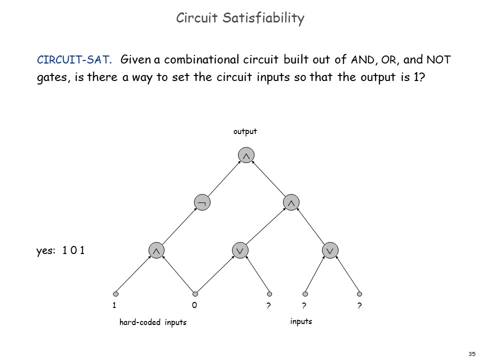
                </div>
                <div class="image-caption">Circuit SAT</div>
            </figure>
<figure class="image-bubble">
                <div class="img-lightbox">
                    <div class="overlay"></div>
                    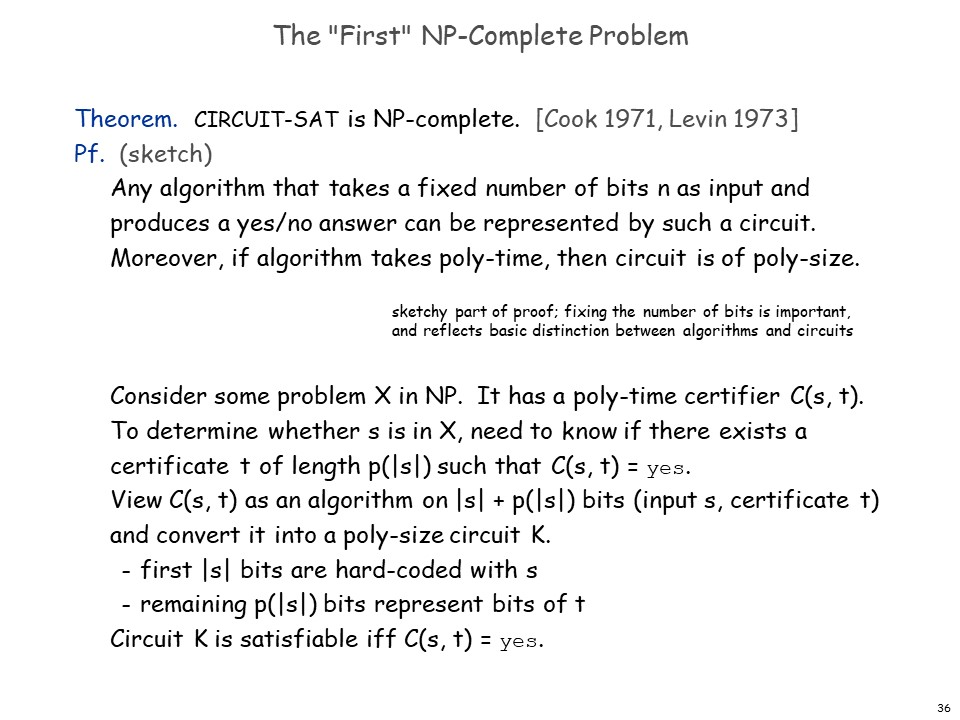
                </div>
                <div class="image-caption">证明 Circuit SAT 是 NPC</div>
            </figure>

<p>证明的大概思路就是，对于任意 NP 问题，都可以把他的有限的解和验证算法的 t 构成一个逻辑电路，就把所有问题归约为了这个问题。</p>
<h4 id="更多的-NP-Complete-问题"><a href="#更多的-NP-Complete-问题" class="headerlink" title="更多的 NP-Complete 问题"></a>更多的 NP-Complete 问题</h4><p>我们证明 NP-Complete 的，如果按定义，证明所有 NP 问题都能被归约到这个问题，这也太难了。但是——  </p>
<p>有了第一个 NP-Complete 问题，我们就可以通过把已知的 NP-Complete 问题归约到其他问题，（根据归约的传递性）从而证明更多的问题也是 NP-Complete。</p>
<p>以下就是一个 NP-Complete 问题的拓扑图。</p>
<figure class="image-bubble">
                <div class="img-lightbox">
                    <div class="overlay"></div>
                    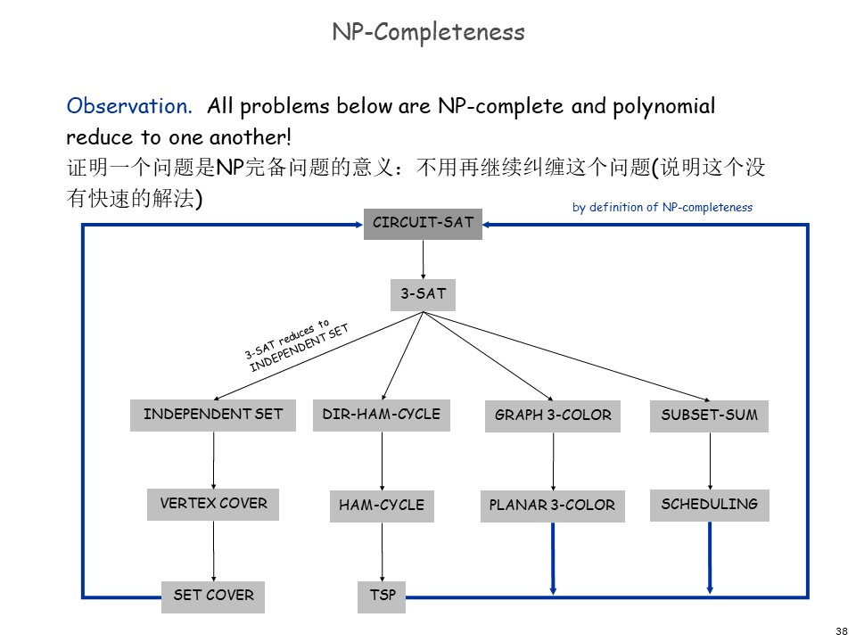
                </div>
                <div class="image-caption">NP-Complete 拓扑图</div>
            </figure>

<p>这些问题又分为六个基本大类：</p>
<ol>
<li>Packing problems(装箱问题):  SET-PACKING, INDEPENDENT SET.</li>
<li>Covering problems:  SET-COVER, VERTEX-COVER.</li>
<li>Constraint satisfaction problems(约束满足问题):  SAT, 3-SAT.</li>
<li>Sequencing problems:  HAMILTONIAN-CYCLE, TSP(旅行商问题).</li>
<li>Partitioning problems: 3D-MATCHING 3-COLOR.</li>
<li>Numerical problems:  SUBSET-SUM, KNAPSACK.</li>
</ol>
<p><strong>大多</strong>数 NP 问题，要么已知是 P 的，要么已经被证明是 NP-Complete 的了。（也有例外：质因数分解、判断图的同构、纳什均衡等）</p>
<p>看到这里，你大概已经明白了，我们一般说一个问题已被证明多项式不可解，其实不是说的 NP，而是 NP-Complete（准确的说，是 NP-Hard。  </p>
<p>虽然 NP-Complete 的定义里面<strong>也</strong>没有直接提到”多项式不可解”，但是，可以注意到的是，NP-Complete 问题多项式可解的充要条件是：<strong>P=NP</strong>。</p>
<p>接下来，我们要分别阐述六个基本大类里的 NPC 问题。</p>
<p>39-49???????</p>
<h4 id="NP-问题归约例子"><a href="#NP-问题归约例子" class="headerlink" title="NP 问题归约例子"></a>NP 问题归约例子</h4><h2 id="近似算法"><a href="#近似算法" class="headerlink" title="近似算法"></a>近似算法</h2>
        </div>

        <blockquote class="post-copyright">
    
    <div class="content">
        
<span class="post-time">
    最后更新时间：<time datetime="2021-09-11T12:19:35.031Z" itemprop="dateUpdated">2021-09-11 20:19:35</time>
</span><br>


        
    </div>
    
    <footer>
        <a href="https://blog.lyh543.cn">
            
            lyh543
        </a>
    </footer>
</blockquote>

        


        <div class="post-footer">
            
	<ul class="article-tag-list" itemprop="keywords"><li class="article-tag-list-item"><a class="article-tag-list-link" href="/tags/%E5%9D%91/" rel="tag">坑</a></li><li class="article-tag-list-item"><a class="article-tag-list-link" href="/tags/%E8%AE%A1%E7%AE%97%E6%9C%BA%E7%A7%91%E5%AD%A6/" rel="tag">计算机科学</a></li><li class="article-tag-list-item"><a class="article-tag-list-link" href="/tags/%E8%AF%BE%E7%A8%8B%E7%AC%94%E8%AE%B0/" rel="tag">课程笔记</a></li></ul>


            
<div class="page-share-wrap">
    

<div class="page-share" id="pageShare">
    <ul class="reset share-icons">
      <li>
        <a class="weibo share-sns" target="_blank" href="http://service.weibo.com/share/share.php?url=https://blog.lyh543.cn/computer-science/design-and-analysis-of-algorithms/&title=《算法设计》 — 小灰灰灰灰的博客&pic=https://blog.lyh543.cn/img/avatar.png" data-title="微博">
          <i class="icon mdi mdi-sina-weibo"></i>
        </a>
      </li>
      <li>
        <a class="weixin share-sns wxFab" href="javascript:;" data-title="微信">
          <i class="icon icon-weixin"></i>
        </a>
      </li>
      <li>
        <a class="qq share-sns" target="_blank" href="http://connect.qq.com/widget/shareqq/index.html?url=https://blog.lyh543.cn/computer-science/design-and-analysis-of-algorithms/&title=《算法设计》 — 小灰灰灰灰的博客&source=" data-title=" QQ">
          <i class="icon mdi mdi-qqchat"></i>
        </a>
      </li>
      <li>
        <a class="facebook share-sns" target="_blank" href="https://www.facebook.com/sharer/sharer.php?u=https://blog.lyh543.cn/computer-science/design-and-analysis-of-algorithms/" data-title=" Facebook">
          <i class="icon mdi mdi-facebook"></i>
        </a>
      </li>
      <li>
        <a class="twitter share-sns" target="_blank" href="https://twitter.com/intent/tweet?text=《算法设计》 — 小灰灰灰灰的博客&url=https://blog.lyh543.cn/computer-science/design-and-analysis-of-algorithms/&via=https://blog.lyh543.cn" data-title=" Twitter">
          <i class="icon mdi mdi-twitter"></i>
        </a>
      </li>
      <li>
        <a class="google share-sns" target="_blank" href="https://plus.google.com/share?url=https://blog.lyh543.cn/computer-science/design-and-analysis-of-algorithms/" data-title=" Google+">
          <i class="icon mdi mdi-google-plus"></i>
        </a>
      </li>
    </ul>
 </div>


    <a href="javascript:;" id="shareFab" class="page-share-fab waves-effect waves-circle">
        <i class="icon icon-lg mdi mdi-share-variant"></i>
    </a>
</div>


        </div>
    </div>

    
<nav class="post-nav flex-row flex-justify-between">
  
    <div class="waves-block waves-effect prev">
      <a href="/maths/difference-equation/" id="post-prev" class="post-nav-link">
        <div class="tips"><i class="icon mdi mdi-chevron-left icon-lg icon-pr"></i> Prev</div>
        <h4 class="title">差分方程</h4>
      </a>
    </div>
  

  
    <div class="waves-block waves-effect next">
      <a href="/mcm/optimization-in-mcm/" id="post-next" class="post-nav-link">
        <div class="tips">Next <i class="icon icon-lg icon-pl mdi mdi-chevron-right"></i></div>
        <h4 class="title">最优化算法在数学建模中的应用</h4>
      </a>
    </div>
  
</nav>


    


<section class="comments" id="comments">
    <div id="gitalk-container"></div>
    <link rel="stylesheet" href="https://unpkg.com/gitalk/dist/gitalk.css">
    <script src="https://unpkg.com/gitalk/dist/gitalk.min.js"></script>
    <script>
        var id = location.pathname
        if (location.pathname.length > 50) {
          id = location.pathname.replace(/\/\d+\/\d+\/\d+\//, '').replace('/', '').substring(0, 50)
        }
        const gitalk = new Gitalk({
          clientID: 'ec7daa4e047c3c30570d',
          clientSecret: '025a9e40a1d101f28fd1a945d286a819e9fa1c3d',
          repo: 'lyh543.github.io',
          owner: 'lyh543',
          admin: ['lyh543'],
          id: id,      // Ensure uniqueness and length less than 50
          title: document.title.split('|')[0],
          distractionFreeMode: false  // Facebook-like distraction free mode
        })

        gitalk.render('gitalk-container')
    </script>
</section>


</article>


</div>

        <footer class="footer">
    <div class="top">
        

        <p>
            
                <span><a href="/atom.xml" target="_blank" class="rss" title="rss"><i class="icon icon-lg mdi mdi-rss"></i></a></span>
            
            <span>博客内容遵循 <a rel="license noopener" href="https://creativecommons.org/licenses/by-nc-sa/4.0/deed.zh" target="_blank">知识共享 署名 - 非商业性 - 相同方式共享 4.0 国际协议</a></span>
        </p>
    </div>
    <div class="bottom">
        <p><span>lyh543 &copy; 2019 - 2021</span>
            <span>
                
                <a href="http://www.miitbeian.gov.cn/" target="_blank">蜀ICP备19034464号</a><br>
                
                Powered by <a href="http://hexo.io/" target="_blank">Hexo</a> Theme <a href="https://github.com/yscoder/hexo-theme-indigo" target="_blank">indigo</a>
            </span>
        </p>
    </div>
</footer>

    </main>
    <div class="mask" id="mask"></div>
<a href="javascript:;" id="gotop" class="waves-effect waves-circle waves-light"><span class="icon icon-lg mdi mdi-chevron-up"></span></a>


<div class="global-share" id="globalShare">
    <ul class="reset share-icons">
      <li>
        <a class="weibo share-sns" target="_blank" href="http://service.weibo.com/share/share.php?url=https://blog.lyh543.cn/computer-science/design-and-analysis-of-algorithms/&title=《算法设计》 — 小灰灰灰灰的博客&pic=https://blog.lyh543.cn/img/avatar.png" data-title="微博">
          <i class="icon mdi mdi-sina-weibo"></i>
        </a>
      </li>
      <li>
        <a class="weixin share-sns wxFab" href="javascript:;" data-title="微信">
          <i class="icon icon-weixin"></i>
        </a>
      </li>
      <li>
        <a class="qq share-sns" target="_blank" href="http://connect.qq.com/widget/shareqq/index.html?url=https://blog.lyh543.cn/computer-science/design-and-analysis-of-algorithms/&title=《算法设计》 — 小灰灰灰灰的博客&source=" data-title=" QQ">
          <i class="icon mdi mdi-qqchat"></i>
        </a>
      </li>
      <li>
        <a class="facebook share-sns" target="_blank" href="https://www.facebook.com/sharer/sharer.php?u=https://blog.lyh543.cn/computer-science/design-and-analysis-of-algorithms/" data-title=" Facebook">
          <i class="icon mdi mdi-facebook"></i>
        </a>
      </li>
      <li>
        <a class="twitter share-sns" target="_blank" href="https://twitter.com/intent/tweet?text=《算法设计》 — 小灰灰灰灰的博客&url=https://blog.lyh543.cn/computer-science/design-and-analysis-of-algorithms/&via=https://blog.lyh543.cn" data-title=" Twitter">
          <i class="icon mdi mdi-twitter"></i>
        </a>
      </li>
      <li>
        <a class="google share-sns" target="_blank" href="https://plus.google.com/share?url=https://blog.lyh543.cn/computer-science/design-and-analysis-of-algorithms/" data-title=" Google+">
          <i class="icon mdi mdi-google-plus"></i>
        </a>
      </li>
    </ul>
 </div>


<div class="page-modal wx-share" id="wxShare">
    <a class="close" href="javascript:;"><i class="icon icon-close"></i></a>
    <p>扫一扫，分享到微信</p>
    
</div>


    <script src="//cdn.bootcss.com/node-waves/0.7.4/waves.min.js"></script>
<script>
var BLOG = { ROOT: '/', SHARE: true, REWARD: false };


</script>

<script src="/js/main.min.js?v=1.7.2"></script>


<div class="search-panel" id="search-panel">
    <ul class="search-result" id="search-result"></ul>
</div>
<template id="search-tpl">
<li class="item">
    <a href="{path}" class="waves-block waves-effect">
        <div class="title ellipsis" title="{title}">{title}</div>
        <div class="flex-row flex-middle">
            <div class="tags ellipsis">
                {tags}
            </div>
            <time class="flex-col time">{date}</time>
        </div>
    </a>
</li>
</template>

<script src="/js/search.min.js?v=1.7.2" async></script>


</body>
</html>
